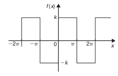
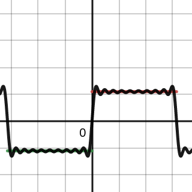

What is fourier series and how it came to be?
The Fourier series is a mathematical concept which was developed by the French mathematician Jean-Baptiste Fourier in the early 19th century. He engraved his name in the mathematics hall of fame with the groundbreaking discovery of Fourier series.
Fourier's key insight was that any function could be decomposed into a sum of sine and cosine waves with different amplitudes and frequencies. This discovery laid the foundation many areas science like physics, telecommunication etc.
Fourier derived a formula which is now known as the Fourier series which provides a systematic way of expressing any function (provided it matches dilichet's 1 conditions) as an infinite sum of sines and cosines.
All of this is quite a bit to understand just through words, so lets look at a small animation which will help us understand a bit easier. (This animation was taken from 3b1b's video on this very topic. Wtach the video after reading this!)
Add gif here
Pretty cool right!? Now lets take a look at the maths.
The formula
According to the statement lets consider a function f(x) with a period T defined on an interval [−π,π]. Then the fourier series rerpresentation of f(x) is given by: f(t) = a0 + ∑[ancosnωt+bnsinnωt]
where
- a0 is the constant term
- an and bn are called fourier and n is a positive integer
- ω is the fundamental frequency.
Calculating Fourier coefficients and the constant
The fourier coefficients can be found using these formulae: $$a_{0} = \frac{1}{2 \pi} \int^{\pi}_{-\pi}f(x) dt$$
$$a_n = \frac{1}{\pi} \int_{-\pi}^{\pi}f(x)\cos{nx}dx$$
$$b_n = \frac{1}{\pi} \int^{\pi}_{-\pi} f(x)\sin{nx}dx$$
Where ∀ n ∈ N
Breaking down the math
Looking at the statement we can very easily understand how the formula came to be.
As we know, a Fourier series is a decomposition of a function into sine and cosine waves, and the sum of these waves of different frequencies uptill infinity very closely represents the original function f(x), thus the term "$$\sum_{n=1}^{\infty}$$" which means sum of all terms for n = 1 to infinity.
Obviously there is no such thing as infinite, but the more number of terms you add the closer it represents to the original function, so tending to infinity.
Now the coefficients are what decide the frequency and amplitude of each of the waves. Now the constant term a0 is the average of all the outputs of the function over the certain interval, yeilding equation $a_{0} = \frac{1}{2 \pi} \int^{\pi}_{-\pi}f(x) dt$.
If we break this down into f(x) into the sums again and integrate individual terms, there will be only one term whose integral will be a constant number and all others will be 0. This one constant term is a0.
Wow if we multiply f(x) by some other term, and then repeat the above step again, then some nth term will be the constant term, which is actually $an$! Here we are multiplying each term with a sine wave, Thus the equation: $$a_n = \frac{1}{\pi} \int_{-\pi}^{\pi}f(x)\sin{nx}dx$$.
And similarly we can also calculate bn.
Lets understand this better by solving a question. Consider the following function.
$$f(x) = \begin{cases} -k & \text{when } -\pi < x < 0 \\ +k & \text{when } 0 < x < \pi \end{cases}$$
The graph of the function will look like this
Now we need to find the right sum of sines and cosines which will closely represent this function. First we need to find the constant a0. Let's use the formula
$$a_{0} = \frac{1}{2 \pi} \int^{\pi}_{-\pi}f(x) dt$$
Since this function is discontinious we can break it down into two, So from − π to 0 the value of the function f(x) will be − k and from 0 to π it will be k, ∴
$$a_0 = \frac{1}{2 \pi}[ \int_{-\pi}^{0}-k dx + \int_{0}^{\pi}k dx]$$
Solving this integral we get the answer:
a0 = 0
To the keen eyes, this result was obvious, as a0 is the average value over the entire period, it is infact 0 in this case. Let's move on to calculating an now; Using the formula
$$a_n = \frac{1}{\pi} \int_{-\pi}^{\pi}f(x)\cos{nx}dx$$
Now break it down as before and solve the integral and we get:
an = 0
This means that there are no terms of cosine present in the Fourier series.
Rpeating the same we find bn and get the following result:
Now we get two cases when n is odd and n is even, lets consider them individually.
Case 1: n is even
When n is even and you substitute values you get 0, This means there are no even terms.
Case2: n is odd
When n is odd, we obtain this equation: $$b_n = \frac{4k}{n\pi}$$ so for all odd values of n we get: $$b_1 = \frac{4k}{\pi},\ b_2 = \frac{4k}{3\pi},\ b_3= \frac{4k}{5\pi}$$ and so on.
Substituting all the values in the original formula we get
$$f(x) =0+ \sum_{n=1}^{\infty }(0 + b_{n} \sin{nx})$$ ∴ we can say, $$f(x) = \frac{4k}{\pi} (\sin{x} + \frac{1}{3}\sin{3x} + \frac{1}{5}\sin{5x}+....)$$
Now if we plot this function against the original graph we get this:
red line: original function black line: calculated function
Hence we can say that any function f(x) can be represented as a sum of sine and cosine waves.
As we can see the function we just calculate is very close to what the original function looks.
That's it for this blog, In this series, next blog I'll be probably covering Taylor's Series.
Thanks for reading!~